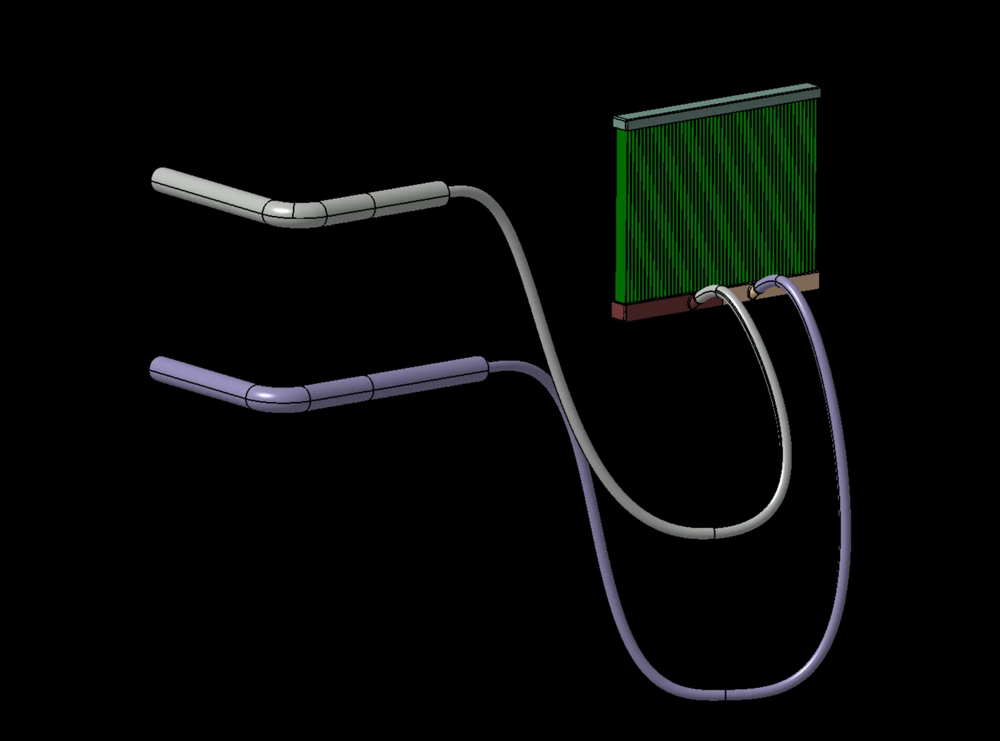

Selected projects
04
01
CFD Validation of the Imperial Front Wing
RANS · CFD validation · PIV comparison

02
F1 2026 CAD & Aerodynamic Design
CAD modelling · CAD to CFD workflow

03
Numerical Analysis of a Motorsport Radiator Model
Mesh independence · GCI · Experimental correlation

04
Experimental Validation of a Motorsport Radiator CFD Model
Porous media calibration · Thermal validation